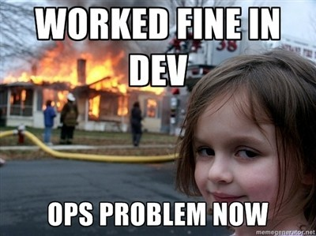
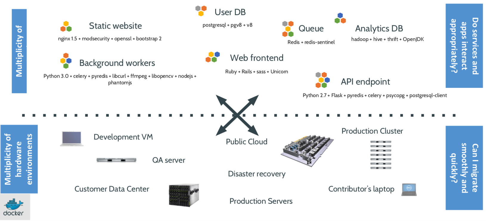
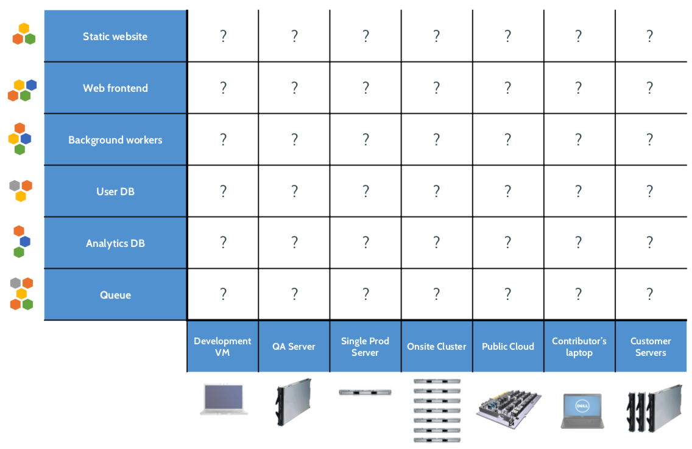
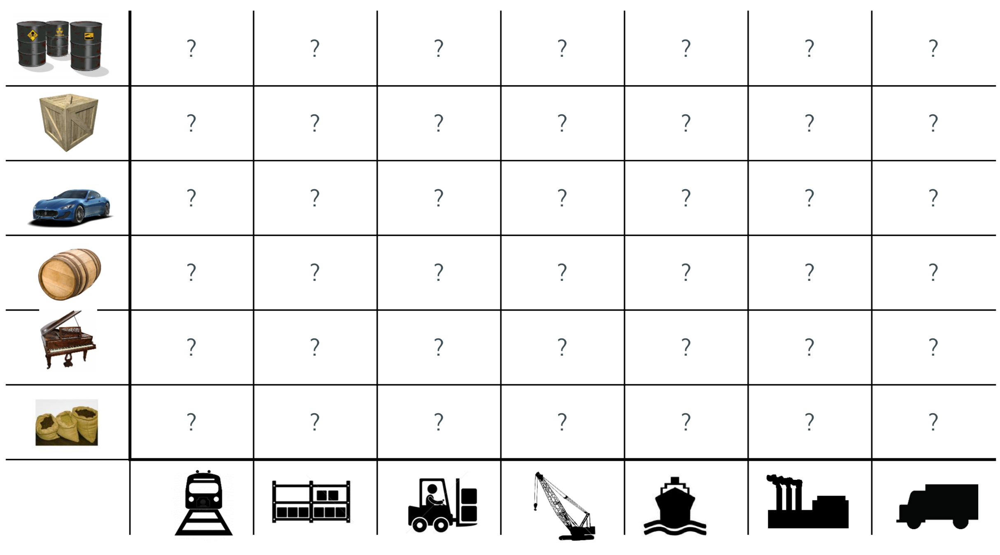
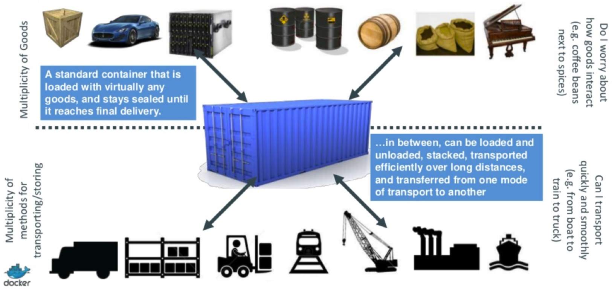
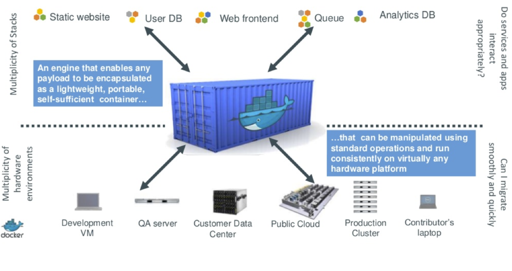
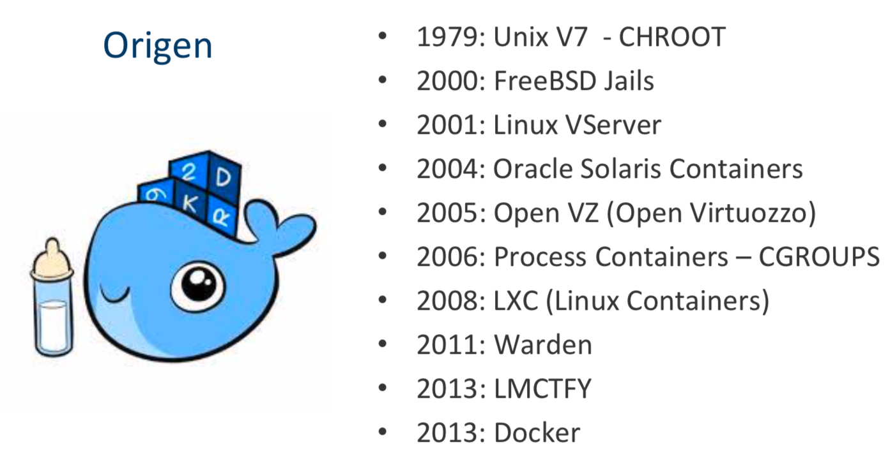
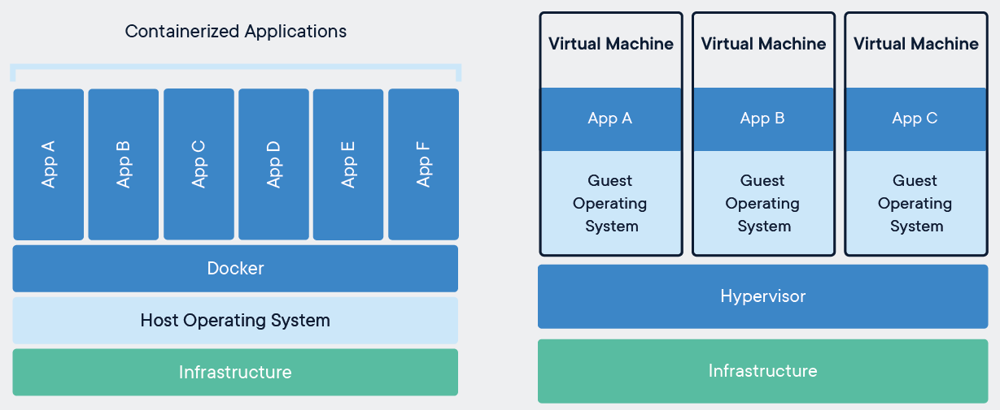
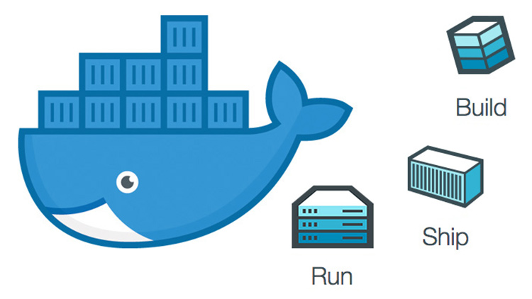
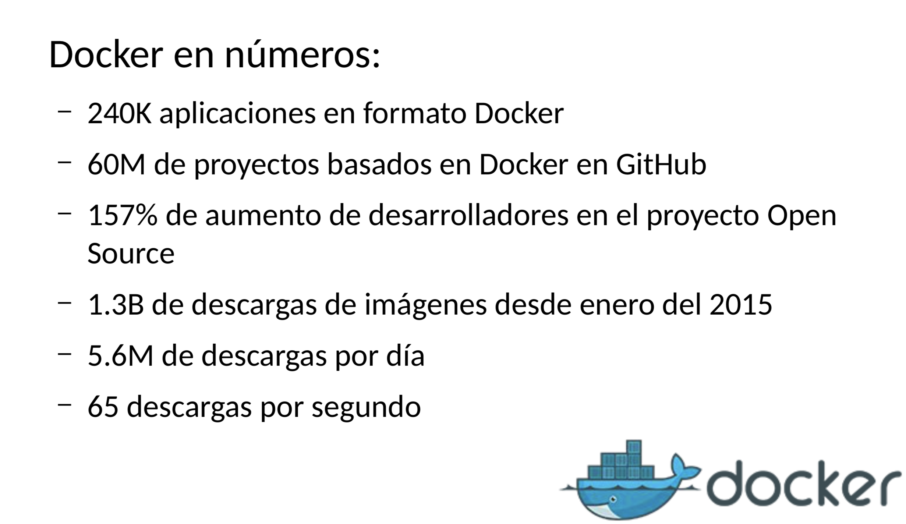

Docker 101
Created by Franco G. Riberi.
for the anxious

rm -rf /home .... :-(
It works on my machine!
The Challenge
The Matrix of Hell
Transport problem before 60'
Solution
Same approch
run anything, run everywhere!
A new concept? Not at all
Containers sound likes a VM
So, what docker is?
Why Docker?
Docker Architecture

where it all starts - Dockerfile
FROM debian. # set the base image
LABEL version="1.0" # extra metadata
WORKDIR /app # Set the working directory to /app.
COPY . /app. # # Copy the current directory contents into the container
RUN apt-get install -qy git ... # install basic apps
EXPOSE 80 # Make port 80 available to outside this container
ENV NAME World # Define environment variable
CMD ["python", "app.py"] # Run app.py when the container launches
Demo time!


Hello world!

Docker CLI commands - [Images]
# Commands for interacting with images
$ docker images # shows all images.
$ docker import # creates an image from a tarball.
$ docker build # creates image from Dockerfile.
$ docker commit # creates image from a container.
$ docker rmi # removes an image.
$ docker history # list changes of an image.
# Here are some data on commonly used images:
scratch - ultimate base image and it has 0 files / 0 size.
busybox - minimal Unix, 2.5 MB, around 10000 files.
debian:jessie - latest Debian, 122 MB, around 18000 files.
ubuntu:14.04 - Ubuntu, 188 MB, around 23000 files.
Docker CLI commands - [Containers]
# Commands for interacting with containers
$ docker create # creates a container but does not start it.
$ docker run # creates and starts a container.
$ docker stop # stops it.
$ docker start # will start it again.
$ docker restart # restarts a container.
$ docker rm # deletes a container.
$ docker kill # sends a SIGKILL to a container.
$ docker attach # will connect to a running container.
$ docker wait # blocks until container stops.
$ docker exec # executes a command in a running container.
# Inspecting Containers
$ docker ps # shows running containers.
$ docker inspect # info on a container (incl. IP address).
$ docker logs # gets logs from container.
$ docker events # gets events from container.
$ docker port # shows public facing port of container.
$ docker top # shows running processes in container.
$ docker diff # shows changed files in container's FS.
$ docker stats # shows metrics, memory, cpu, filsystem
docker run *
# Run a container interactively like a normal terminal program.
$ docker run -it --rm ubuntu
(-i) - send stdin to the process.
(-t) - tell the process that a terminal is present.
(--rm) - remove the container on exit.
# Run a container in the background
$ docker run -d ubuntu
(-d) - detached mode, you can attach again with docker attach
# Run a named container and pass it some environment variables
$ docker run --name mydb --env MYSQL_USER=db-user \
-e MYSQL_PASSWORD=secret --env-file ./mysql.env mysql
volume
# Start a new nginx container with /var/log as a volume
$ docker run -v /var/log nginx
Since the directory of the host is not given, the volume is created in /var/lib/docker/volumes/ec3c543bc..535.
# Start a new nginx container with /var/log as a volume mapped to /tmp on Host
$ docker run -v /tmp:/var/log nginx
# Mount volumes from another container with --volumes-from.
# Start a db container
$ docker run -v /var/lib/postgresql/data --name mydb postgres
# Start a backup container with the volumes taken from the mydb container
$ docker run --volumes-from mydb backup
Best Practices for Building Images
- .dockerignore
- multi-stage builds
- Don't install unnecessary packages
- Use multi-line commands instead of multiple RUN commands (*)
- Enable content trust
Tips and Tricks
# Limit the amount of memory
$ docker run -m 256m yourapp
# Error response from daemon: Minimum memory limit allowed is 4MB exit
$ docker run -m 128 ubuntu true
# Limit the number of shares of the CPU this process uses
$ docker run --cpu-shares 512 mypp
# Change the user for the process to www instead of root
$ docker run -u=www nginx
# Get the id (-q) of the last (-l) run container
$ docker ps -l -q
c8044ab1a3d0
# Get container IP
$ docker inspect -f '{{ .NetworkSettings.IPAddress }}' 6f2c42c05500
172.17.0.11
# Get the environment variables of a running container.
$ docker exec -it 6f2c42c05500 env
PATH=/usr/local/sbin:/usr...
HOSTNAME=6f2c42c05500
REDIS_1_PORT=tcp://172.17.0.9:6379
REDIS_1_PORT_6379_TCP=tcp://172.17.0.9:6379
...
# Run a shell inside the container with id 6f2c42c0
$ docker exec -it 6f2c42c0 sh
# Dockerfile example
FROM dockerfile/nodejs:latest
RUN apt-get update && \
apt-get install zlib1g-dev && \
npm install -g pm2 && \
mkdir -p /app
WORKDIR /app
COPY . /app
CMD pm2 start app.js -x -i 1 && pm2 logs
# Build and run the image
$ docker build -t myapp .
$ docker run -it --rm myapp
# To avoid the rebuild, build the image once and then mount the local directory when you run it.
$ docker run -it --rm -v $(PWD):/app myapp
Network --> https://medium.com/elbstack/docker-go-and-privileged-ports-d6354db472c3
docker multistage
RUN apt/get instasll , one per line for better caching
# Remove all containers with status=exited
$ docker rm $(docker ps -a -q -f status=exited)
# Stop all containers
$ docker stop $(docker ps -q) - will run stop only for active
$ docker stop $(docker ps -aq) - will run stop for all
# Remove all docker images
$ docker rmi $(docker images -q)
# Backup of container
$ docker ps -a // choose your one of your container
$ docker commit -p
$ docker images // it will appear one image with
# save docker container to archive
$ docker save -o .tar
# Restore docker container
$ docker load -i .tar
# Tailing logs
$ sudo docker logs -t --tail 1000 my_postgres 2>&1 | grep -i error
# Clean up After Yourself
RUN * && apt-get clean && rm -rf /var/lib/apt/lists/*
# RUN apt-get --no-install-recommends ...
# Create a Non-Root User
RUN useradd --user-group --shell /bin/false resin
USER resin
docker build -t pepe .
BUILD WITH DIFF FILE
docker export -> .tgz -> docker
docker login -> la configuración se guardará en ~/.docker/config.json
Wrapping out
- Docker is here to stay.
- It fixes dependency hell.
- Containers are fast!
- Cluster solutions exists, but don't expect them to be seamless, yet!
Next steps: Orchestration
- Docker Compose
- Docker Swarm
- Mesosphere
- Kubernetes